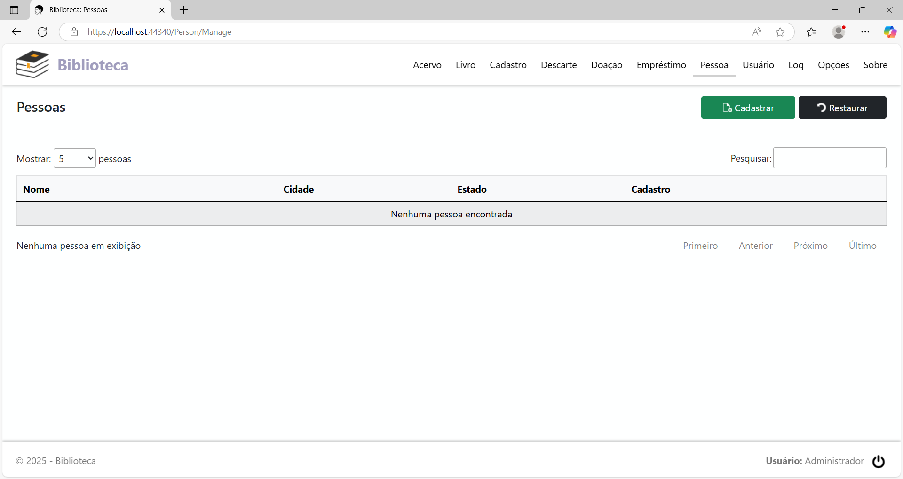
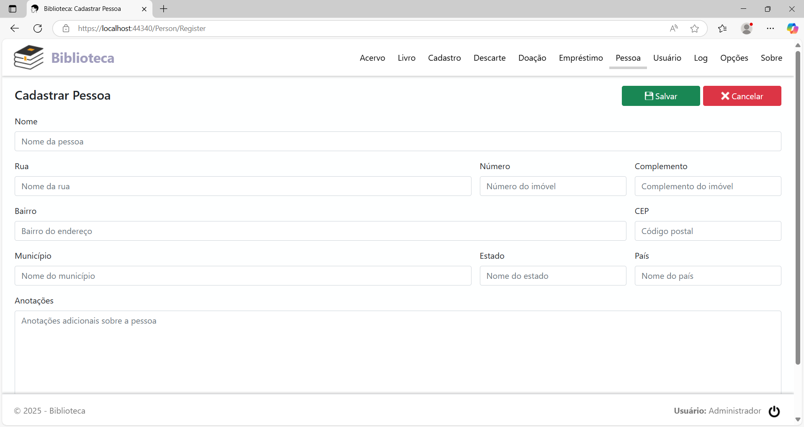
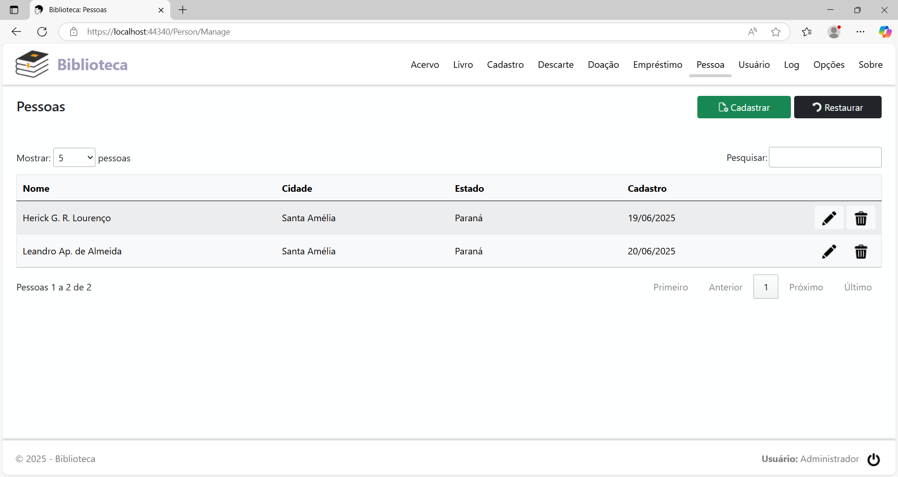
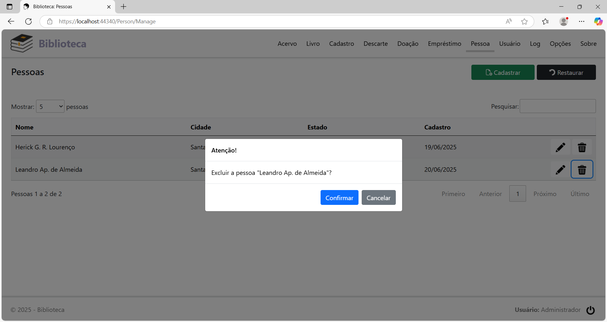
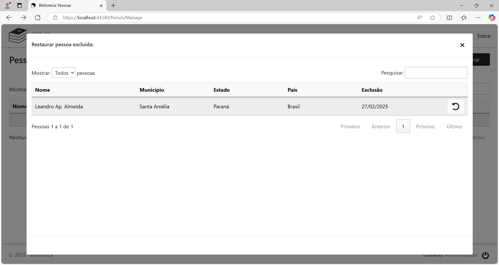

Menu Pessoa
Clicando na opção de menu Pessoa, será exibida a página Pessoas. Se não há nenhuma pessoa cadastrada ainda, a página terá o seguinte aspecto:

Cadastrar uma pessoa
Para cadastrar uma pessoa, clique no botão Cadastrar. Será exibida a página Cadastrar Pessoa:

Preencha os campos:
Nome: Nome da pessoa.
Rua: Rua do endereço da pessoa.
Número: Número do endereço da pessoa.
Complemento: Tipo de imóvel da pessoa.
Bairro: Bairro do endereço da pessoa.
CEP: CEP do endereço da pessoa.
Município: Município em que a pessoa reside.
Estado: Estado em que a pessoa reside.
País: País em que a pessoa reside.
Anotações: Anotações adicionais para o cadastro da pessoa.
Preenchidos os campos, clique no botão Salvar.
Após o registro, a página terá este aspecto:

Cada linha na tabela,
representando uma pessoa, tem 2 botões, localizados à direita da
coluna Cadastro, com
as seguintes funções, nesta ordem:
Editar a pessoa: Alterar o cadastro da pessoa.
Excluir a pessoa: Excluir o cadastro da pessoa.
Alterar o cadastro de uma pessoa
Localize na lista o cadastro da pessoa que será alterado e clique no botão Editar a pessoa. Será exibida a página Editar Pessoa, listando todos os campos do mesmo.
Altere o(s) campo(s) que está(ão) incorreto(s) e clique no botão Salvar.
Excluir o cadastro de uma pessoa
Localize na lista o cadastro da pessoa que será excluído e clique no botão Excluir a pessoa. Será exibido o diálogo para a confirmação:

Clique no botão Confirmar para concluir.
Restaurar um cadastro excluído
Para restaurar o cadastro de uma pessoa que foi excluído por engano, clique no botão Restaurar, no cabeçalho da página. Vai abrir o diálogo Restaurar pessoa excluída:

Localize o cadastro a ser restaurado e clique no botão Restaurar (seta).